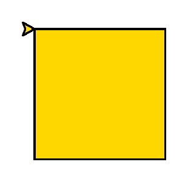
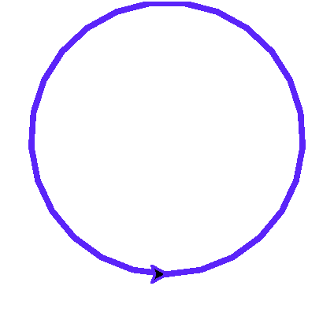
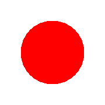

Глава 7 · Глубокое погружение в Turtle
Фигуры без линий, окружности, точки
Три инструмента из главы 6, но теперь с реальным выполненным результатом — и мостом к более глубокой геометрии окружности впереди.
Три инструмента, с которыми мы уже вскользь встречались в главе 6 — теперь наведём порядок и посмотрим на них внимательнее, прежде чем идти глубже.
Фигуры без линий: заливка цветом
Чтобы нарисовать не просто контур, а закрашенную фигуру, оберните рисование между
begin_fill() и end_fill():
zalivka.py
import turtle
screen = turtle.Screen()
screen.setup(width=340, height=320)
artist = turtle.Turtle()
artist.fillcolor("gold")
artist.begin_fill()
for _ in range(4):
artist.forward(100)
artist.right(90)
artist.end_fill()
screen.exitonclick()Результат выполнения

zalivka_kod.py
artist.fillcolor("gold")
artist.begin_fill()
for _ in range(4):
artist.forward(100)
artist.right(90)
artist.end_fill()Окружности
Рисовать окружность вручную через множество коротких отрезков не нужно — у Turtle есть
готовая команда circle(радиус):
okruzhnost.py
import turtle
screen = turtle.Screen()
screen.setup(width=340, height=320)
artist = turtle.Turtle()
artist.pensize(3)
artist.pencolor("#5B24F9")
artist.circle(80)
screen.exitonclick()Результат выполнения

Точки
dot() — маленький (или не очень) закрашенный кружок в
текущей позиции, без движения черепашки:
tochka.py
import turtle
screen = turtle.Screen()
screen.setup(width=260, height=200)
artist = turtle.Turtle()
artist.hideturtle()
artist.dot(50, "red")
screen.exitonclick()Результат выполнения

tochka_kod.py
artist.dot(50, "red") # точка диаметром 50, краснаяВпереди — намного глубже
Это только знакомство. В следующих трёх разделах разберём геометрию окружности по-настоящему подробно — откуда берётся центр, что значит отрицательный радиус, и как окружность превращается в многоугольник.
Повторное применение · Практика: заливка, окружности и точки
Модуль turtle открывает нативное окно Python — выполните локально в VS Code, PyCharm или Jupyter Это то же задание 07-03;
повторное открытие не добавляет новую практику к счётчику прогресса.